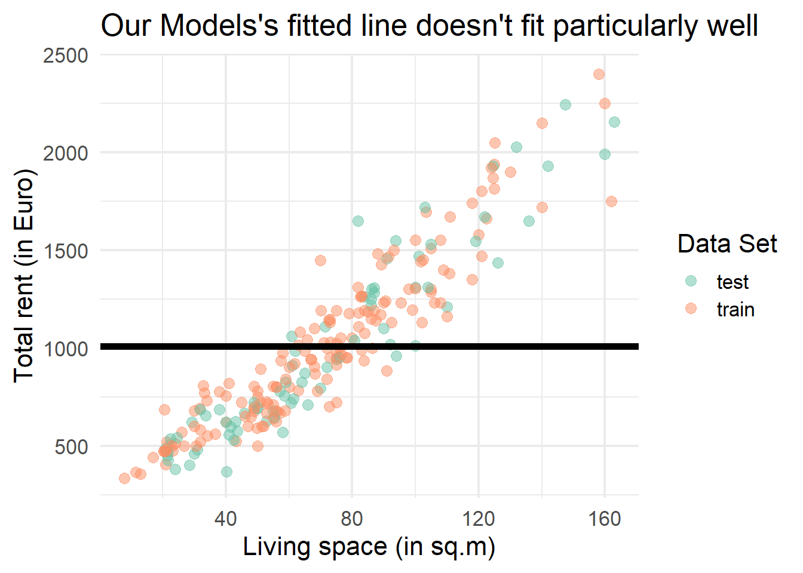
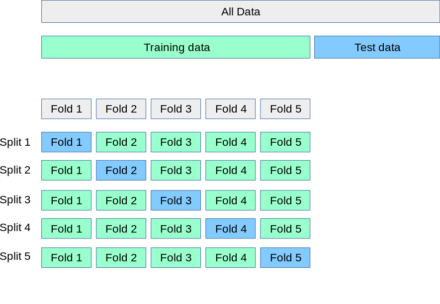
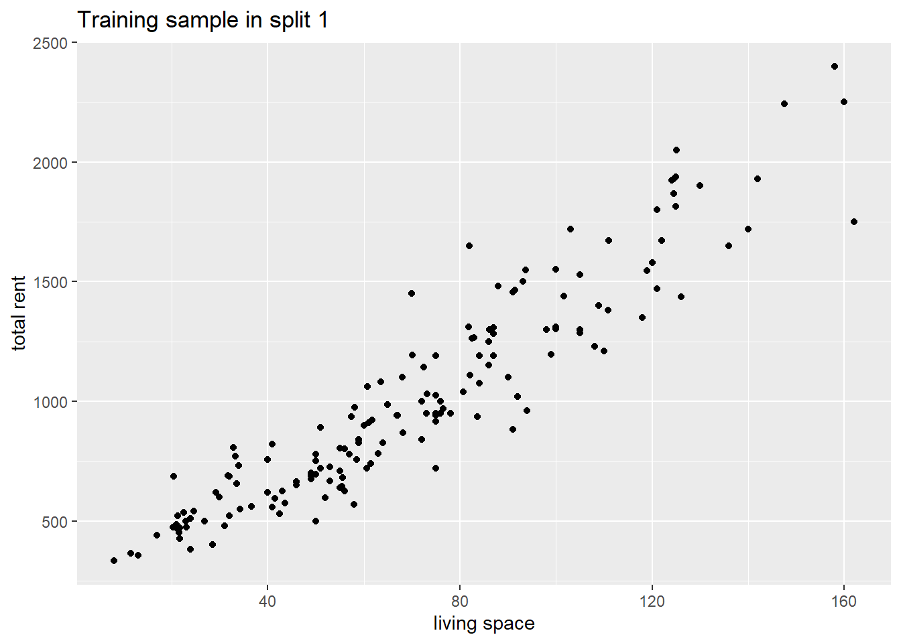
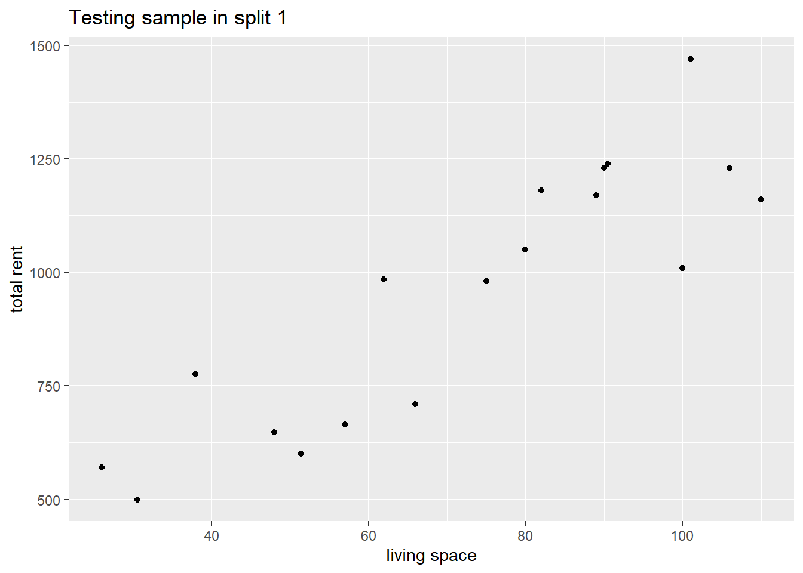
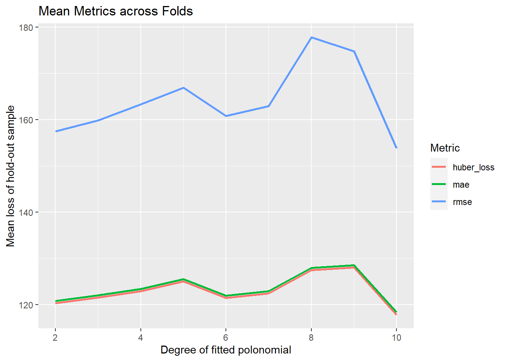

library("tidyverse")
library("tidymodels")
library("ggtext")Problem Set 02
Foreword
In this exercise session, we want to review linear regression and learn how to split our data into training and test data and why that is important. We will also familiarize ourselves with the {tidymodels} framework, learn about the importance of good model development practices, and learn how to utilize this knowledge by building multiple polynomial models.
Exercises
Exercise 1: Bias-Variance Trade-Off
In the lecture, we have already briefly discussed the issue of overfitting by considering a simple example. The goal of this exercise is to examine a real-world dataset and see how we can recreate the phenomenon of under and overfitting with a simple linear model.
Exercise 1a: Data exploration and manipulation
data_aux_filtered <- read_csv("rent_aux.csv")The rent_aux dataset is a preprocessed subset of the Apartment rental offers in Germany dataset. It contains 239 unique rental listings for flats in Augsburg. The data was sourced at three different dates in 2018 and 2019 and contains 28 different variables.
Instead of focusing on a comprehensive data cleaning and manipulation process, we will simply use the two variables livingSpace measuring the area of living in \(m^2\) of a listing and totalRent in EUR, representing the total amount of rent for a month (base rent + utilities).
Exercise 1a i:
Visualize the relationship between the two variables livingSpace and totalRent. The output could look like the plot below.
data_aux_filtered %>%
ggplot(aes(x = livingSpace, y = totalRent)) +
geom_point() +
labs(
x = "living space",
y = "total rent"
)
Exercise 1a ii:
Without conducting a thorough outlier analysis we decide to remove every listing that either costs more than \(2500\) EUR or is bigger than \(200\: m^2\). Use the filter function to remove those outliers.
data_aux_filtered <- data_aux_filtered %>%
filter(totalRent <= 2500, livingSpace <= 200)Exercise 1b: Training a simple model
In this exercise, we want to fit an overly simple model to demonstrate it’s low performance on both, a training and test set.
Exercise 1b i:
In order to ensure consistent results, we set a seed. Furthermore, the vector sampled that is filled \(70\%\) with TRUE values and \(30 \%\) FALSE values is given. Its length matches the length of the data_aux_filtered dataset. The goal is to create a simple training and testing set by randomly splitting the data_aux_filtered dataset into two subsets.
set.seed(2)
sampled <- sample(c(TRUE, FALSE),
nrow(data_aux_filtered),
replace=TRUE, prob=c(0.7, 0.3)
)Exercise 1b i a:
Use the vector sampled to create a tibble rent_train consisting of all samples in data_aux_filtered that match the position of TRUE values in the vector sample. Subsequently, create a list rent_test that consists of all samples in data_aux_filtered that match the position of FALSE values in the vector sampled.
rent_train <- data_aux_filtered[sampled, ]
rent_test <- data_aux_filtered[!sampled, ]Exercise 1b i b:
Using the if_else function and %in% operator, add a column called label to data_aux_filtered that consists of the strings "train" and "test" at the respective positions where a sample is either in rent_train or rent_test. You can use the variable scoutId to match the samples in rent_train and rent_test with samples in data_aux_filtered.
data_aux_filtered <- data_aux_filtered %>% mutate(
label = if_else(
scoutId %in% rent_train$scoutId,
"train",
"test"
)
)Exercise 1b ii:
Create a model simple_model using the lm function and fit the variable totalRent on totalRent. The underlying data should be the previously created list rent_train. By following this kind of weird procedure, we create a model that simply returns the mean of totalRent as a predictor. There will most likely be a warning that we can (at least this time) safely ignore. Also, watch out that the output of lm() will show a rounded value as an intercept but in further calculations, the output simple_model contains the exact value.
simple_model <- lm(
formula = totalRent ~ totalRent,
data = rent_train
)Exercise 1b iii:
Calculate the RMSE loss of the training set rent_train and the testing set rent_test by using the loss_rmse function below. The fitted values on the training set can be accessed by using simple_model$fitted.values. In order to predict the values of the rent_train set, familiarize yourself with the predict function. For reference, you can find some plausible values below.
loss_rmse <- function(y, yhat){
sqrt(mean((y - yhat)^2))
}rmse_simple_model_train <- loss_rmse(
rent_train$totalRent,
simple_model$fitted.values
)
rmse_simple_model_test <- loss_rmse(
rent_test$totalRent,
predict(simple_model, rent_test)
)
glue::glue(
"Training error: {round(rmse_simple_model_train,2)}\n
Testing error: {round(rmse_simple_model_test,2)}
")Training error: 419.43
Testing error: 474.93Exercise 1b iv:
Complete the following code snippet such that the plot looks like the one displayed below. What does the graph below show?
data_aux_filtered %>%
ggplot(
aes(
###############
## Fill Here ##
###############
)
) +
geom_point(size = 3, alpha = 0.5)+
geom_hline(
aes(yintercept = simple_model$coefficients),
linewidth = 2
) +
labs(
x = "Living space (in sq.m)",
y = "Total rent (in Euro)",
color = 'Data Set',
title = "Our Model's fitted line doesn't fit particularly well"
) +
theme_minimal(base_size = 16)+
scale_color_brewer(palette = 'Set2')data_aux_filtered %>%
ggplot(
aes(
x=livingSpace,
y = totalRent,
colour = label
)
) +
geom_point(size = 3, alpha = 0.5)+
geom_hline(
aes(yintercept = simple_model$coefficients),
linewidth = 2
) +
labs(
x = "Living space (in sq.m)",
y = "Total rent (in Euro)",
color = 'Data Set',
title = "Our Models's fitted line doesn't fit particularly well"
) +
theme_minimal(base_size = 16)+
scale_color_brewer(palette = 'Set2')
Exercise 1c: Overfitting a model
Now that we have seen how robust (low variance) a simple model is, we will consider a more complex linear model in this exercise.
Exercise 1c i:
Create a model named model on the rent_train dataset, again, with totalRent as the response variable, but instead of simply using the livingSpace variable as a single predictor, use the poly(livingSpace,20) object instead.
model <- lm(
formula = totalRent ~ poly(livingSpace, 20),
data = rent_train
)Exercise 1c ii:
Calculate the RMSE. For reference, you can find some plausible values below.
rmse_model_train<- loss_rmse(
rent_train$totalRent,
model$fitted.values
)
rmse_model_test <- loss_rmse(
rent_test$totalRent,
predict(model, rent_test)
)
glue::glue(
"training error: {round(rmse_model_train,2)}\n
testing error: {round(rmse_model_test,2)}"
)training error: 125.43
testing error: 839.96Exercise 1c iii:
Explain in your own words the phenomenon observed in the following plot.

Intermezzo: Good practices for applied Machine Learning
In previous courses, we mainly focused on how to fit a certain model to a given dataset. However, this process could be described as model specification, rather than model development. So, what’s the difference between specifying a model and actually building a model?
Developing a model (What we have done so far!):
The given dataset has been cleaned, transformed, and manipulated using a multitude of different packages and libraries.
Resampling methods have been applied but training the model on each subset or newly generated dataset is usually performed by using a loop or similar methods.
Similar to applying resampling methods, hyperparameter tuning is applied by using a loop or similar methods.
In summary, we have only basically specified the model we want to train and used a rather arbitrary and inconsistent approach for everything else.
One of the biggest issues we face, however, is when switching the model. The approach we have been using so far emphasizes working with one selected model that we wish to keep using after data preprocessing.
Developing a model (What we want to do moving forward!):
The main difference between the old approach and the new approach comes down to leveraging the advantages of the {tidyverse} and {tidymodels} frameworks. These frameworks allow for consistently preprocessing the data, setting model specifications, and performing steps like resampling and hyperparameter tuning all at once.
Another huge advantage is, that by following this procedure we can also swiftly switch between different ML models. For example, applying a random forest algorithm and switching to a neural network approach for the same data works is only a matter of changing a few lines of code as we will see in later exercises.
So where is the catch? At first, the process might seem a bit difficult or even “overkill” for the models we use. However, as the lecture progresses, our models will also (at least sometimes) become increasingly sophisticated. So we want to get used to this new process as early as possible in order to get used to it.
The biggest takeaways are:
Consistency: Independent of what the dataset or desired model looks like, we can (almost) always use the same procedure when building a model.
Effectiveness: Once we get used to this new approach, we can develop our models a lot more effectively than before.
Safety: Developing an ML model has many pitfalls and potholes on the way and by design,
{tidymodels}helps us to avoid those.
We will introduce and explore some of the aforementioned concepts in the next exercise and dive deeper in later sessions.
Exercise 2: Cross-Validation
Our first step down the {tidymodels} rabbit hole has already been broached in the lecture. By splitting the data into a training set and test set we can effectively evaluate our trained model on previously unseen data. However, how can we ensure that splitting the data once into a training set and test set yields a good model? A simple answer is: We can’t.
That is where cross-validation comes into play.
Exercise 2a:
Similar to the lecture slides we want to build a simple model for predicting the response variable totalRent in Augsburg by using the single predictor livingSpace.
Exercise 2a: i
Familiarize yourself with the initial_split function and create a split named split on the dataset data_aux_filtered.
split <- initial_split(data_aux_filtered)Exercise 2a ii:
Utilizing the newly created split, create the objects data_train and data_test by using the training and testing functions respectively. Note, that we are basically doing the same thing as in Exercise 1b, but instead of using the base R function sample, we’re now working with the {rsample} package that is part of the {tidyverse} framework.
data_train <- training(split)
data_test <- testing(split)Exercise 2a iii:
Familiarize yourself with the functionality of the vfold_cv function and create an instance named folds with the dataset data_train and the parameter v = 10.
folds <- vfold_cv(data_train, v = 10)The function vfold_cv randomly splits the data into v roughly equally sized subsets. One resample then consists of v-1 of those subsets. The picture below depicts how that process works for v = 5.

Exercise 2a iv:
Each split in the fold can be accessed as a variable by using the $ operator. In order to access split i, we have to use the notation folds$splits[[i]]. By using the analysis function we can then access the v-1 subsets of the original data set that are returned as a data frame. The assessment function returns the hold-out subset of the split.
Familiarize yourself with the functionality of the analysis and assessment function. For the first split, create a scatter plot for both of the subsets subsets. An example of what such plots could look like can be found below.
folds$splits[[1]] %>%
analysis %>%
ggplot(aes(x = livingSpace, y = totalRent)) +
geom_point() +
labs(
x = "living space",
y = "total rent",
title = "Training sample in split 1"
)
folds$splits[[1]] %>%
assessment %>%
ggplot(aes(x = livingSpace, y = totalRent)) +
geom_point()+
labs(
x = "living space",
y = "total rent",
title = "Testing sample in split 1"
)
Exercise 2b:
Now that we have set up our data set for cross-validation, we can continue developing our model. The next step is to assemble the model that we wish to use. In this case, we will choose a simple linear model once again.
Exercise 2b i:
Instead of using a model created with the lm function of the {stats} package as in Exercise 1b ii, we will continue working with the {tidymodels} framework. The {parsnip} package offers a standardized interface for fitting models as well as the return values. A linear model can be created with the linear_reg function. Create a linear model called lm_mod using the linear_reg function. Note, that you do not have to pass any arguments to the function linear_reg at this point.
lm_mod <- linear_reg()If calling the lm_mod object returns the same output as the one you can find below, you have solved this exercise correctly!
lm_mod Linear Regression Model Specification (regression)
Computational engine: lm Exercise 2b ii:
As a next step, we want to create a so-called recipe. According to the R Documentation, a recipe is a description of the steps to be applied to a data set in order to prepare it for data analysis. So a recipe can be thought of figuratively as a sequential procedure to cook our model!
In this exercise, our recipe is rather simple. Create a recipe called lm_recipe by using the recipe function. As arguments for the recipe function, you can pass the following formula. The second argument concerns the data that is given by the data_train dataset in our case.
formula <- totalRent ~ livingSpaceIf calling the lm_recipe object returns the same output as the one you can find below, you have solved this exercise correctly!
lm_recipe <- recipe(formula, data = data_train)
lm_recipe── Recipe ──────────────────────────────────────────────────────────────────────── Inputs Number of variables by roleoutcome: 1
predictor: 1Exercise 2b iii:
After creating our recipe, we create a so-called workflow. The workflow object aggregates information required to fit and predict from a model. In this case, our model lm_mod and the recipe lm_recipe. This whole procedure might seem quite complicated by now. However, later on, it will prove much more efficient and consistent this way.
Given the following code chunk, complete the workflow by adding the model lm_mod using the add_model function and the lm_recipe using the function add_recipe.
lm_wf <-
workflow() %>%
###################
## Continue here ##
###################As above, you can check whether your workflow is correct by calling it and comparing it to the following output.
lm_wf <-
workflow() %>%
add_model(lm_mod) %>%
add_recipe(lm_recipe)
lm_wf══ Workflow ════════════════════════════════════════════════════════════════════
Preprocessor: Recipe
Model: linear_reg()
── Preprocessor ────────────────────────────────────────────────────────────────
0 Recipe Steps
── Model ───────────────────────────────────────────────────────────────────────
Linear Regression Model Specification (regression)
Computational engine: lm Exercise 2b iii:
As a next step, we will specify the metrics we want to use for evaluating our model. The metric_set function allows us to combine multiple metric functions such as the RMSE, MAE, and Huber Loss.
Create an instance called multi_metric using the metric_set function. As arguments, you can pass rmse,mae, and, huber_loss.
multi_metric <- metric_set(rmse, mae, huber_loss)As above, you can check whether your metric set multi_metric is correct by calling it and comparing it to the following output.
multi_metric# A tibble: 3 × 3
metric class direction
<chr> <chr> <chr>
1 rmse numeric_metric minimize
2 mae numeric_metric minimize
3 huber_loss numeric_metric minimize Exercise 2b iv:
Now that we have fully specified our model development process we can fit the model by piping the workflow lm_wf to the fit_resamples function. As the name suggests, the fit_resamples function fits the linear model on each of the folds provided. We simply have to specify the vfold_cv object and the metric_set in order to train the model and calculate the metrics.
lm_fit_rs <-
lm_wf %>%
fit_resamples(folds, metrics = multi_metric)Familiarize yourself with the collect_metrics function and apply it to the lm_fit_rs object. The function returns the average for the respective metrics over all hold-out folds of all the splits (i.e. the average of all the blue cells in the illustration in Exercise 2a iii) and a few more key figures such as the standard deviation of the metric across all folds and the number of folds. A possible output can be found below.
lm_fit_rs %>% collect_metrics()# A tibble: 3 × 6
.metric .estimator mean n std_err .config
<chr> <chr> <dbl> <int> <dbl> <chr>
1 huber_loss standard 128. 10 4.71 Preprocessor1_Model1
2 mae standard 128. 10 4.71 Preprocessor1_Model1
3 rmse standard 160. 10 6.39 Preprocessor1_Model1Exercise 2c:
In this last exercise, we will first look at a demonstration of how to properly train multiple models within the {tidymodels} framework. The idea is to fit multiple polynomial regressions using cross-validation. Subsequently, it is your task to extract different hold-out sample losses and visualize them properly.
Exercise 2c i:
Carefully read the following paragraph and insert the code chunks into your own worksheet in order to solve the subsequent exercises.
We first set the degree values for the polynomials we wish to fit. Similar to Exercise 2 b ii, we then create a recipe, by setting a formula and the data we want to train on. The recipe rec_poly is then passed to the step_poly function that basically creates new columns that are basis expansions of the livinSpace variable. Note, that as for the degree of the step_poly function, we did not pass degree_values rather than the {hardhat} function tune(). tune() is a placeholder for the grid degree_values. Why this is important will be elaborated in the explanation of the next cell (🐻 with me). The raw = TRUE parameter is passed because, in this specific example, we want to use the original (or in this case raw) values of the variable livingSpace.
degree_values <- 2:10
rec_poly <- recipe(
totalRent ~ livingSpace,
data = data_train
) %>%
step_poly(
livingSpace,
degree = tune(),
options = list(raw = TRUE)
)Similarly to Exercise 2b iii, we then create a workflow where we pass the model lm_mod we created in Exercise 2b i.
The real magic then happens when passing the workflow poly_wf to the tune_grid function. The tune_grid function basically iterates along the degree_values, trains the model on all the folds sequentially, and even saves the previously specified metrics in the multi_metric vector to the tune_poly object.
poly_wf <- workflow() %>%
add_model(lm_mod) %>%
add_recipe(rec_poly)
tune_poly <- poly_wf %>%
tune_grid(
grid = tibble(degree = degree_values),
metrics = multi_metric,
resamples = folds
)Similarly to Exercise 2b iv, we can collect the metrics for the average of all hold-out samples by using the collect_metrics function. However, as we have trained polynomials up to degree n = 10, the function returns the metrics for all polynomials with degree n = 2,…,10.
Exercise 2c ii:
Given the tune_poly tibble from the paragraph above, we now want to evaluate the metrics graphically. To do so, create a tibble metrics_cv by applying the collect_metrics() to the tune_poly tibble. The result should look similar to the output below.
metrics_cv <- tune_poly %>%
collect_metrics()head(metrics_cv)# A tibble: 6 × 7
degree .metric .estimator mean n std_err .config
<int> <chr> <chr> <dbl> <int> <dbl> <chr>
1 2 huber_loss standard 120. 10 5.12 Preprocessor1_Model1
2 2 mae standard 121. 10 5.12 Preprocessor1_Model1
3 2 rmse standard 158. 10 8.55 Preprocessor1_Model1
4 3 huber_loss standard 122. 10 4.86 Preprocessor2_Model1
5 3 mae standard 122. 10 4.86 Preprocessor2_Model1
6 3 rmse standard 160. 10 8.29 Preprocessor2_Model1Exercise 2c iii:
Using the metrics_cv tibble, create a line plot that displays different mean losses for each polynomial model. The plot should look similar to the one shown below.
metrics_cv %>%
ggplot(aes(x = degree, y = mean, color = .metric)) +
geom_line(linewidth = 1) +
ylab("Mean loss of hold-out sample") +
xlab("Degree of fitted polonomial") +
labs(
title = 'Mean Metrics across Folds',
col = 'Metric',
)